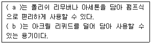
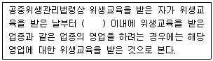

미용사(네일) (2015-04-04 기출문제)
1과목: 공중위생학
1. 다음 중 수인성 감염병에 속하는 것은?
- 유행성 출혈열
- 성홍열
- 세균성 이질
- 탄저병
(정답률: 68%)

2. 인공조명을 할 때 고려 사항 중 틀린 것은?
- 광색은 주광색에 가깝고, 유해 가스의 발생이 없어야 한다.
- 열의 발생이 적고, 폭발이나 발화의 위험이 없어야 한다.
- 균등한 조도를 위해 직접조명이 되도록 해야 한다.
- 충분한 조도를 위해 빛이 좌상방에서 비춰줘야 한다.
(정답률: 81%)
3. 공중보건학의 범위 중 보건 관리 분야에 속하지 않는 사업은?
- 보건 통계
- 사회 보장 제도
- 보건 행정
- 산업 보건
(정답률: 67%)
4. 일반적으로 이ㆍ미용업소의 실내 쾌적 습도 범위로 가장 알맞은 것은?
- 10~20%
- 20~40%
- 40~70%
- 70~90%
(정답률: 75%)
5. 솔라닌(solanin)이 원인이 되는 식중독과 관계가 깊은 것은?
- 감자
- 복어
- 버섯
- 조개
(정답률: 84%)
6. 개달전염(介達傳染)과 무관한 것은?
- 의복
- 식품
- 책상
- 장난감
(정답률: 82%)
7. 다음 중 원발진에 해당하는 피부변화는?
- 가피
- 미란
- 위축
- 구진
(정답률: 76%)
8. 물의 살균에 많이 이용되고 있으며 산화력이 강한 것은?
- 포름알데히드(Formaldehyde)
- 오존( O3)
- E.O(Ethylene Oxide)가스
- 에탄올(Ethanol)
(정답률: 68%)
9. 자외선으로부터 어느 정도 피부를 보호하며 진피조직에 투여하면 피부주름과 처짐 현상에 가장 효과적인 것은?
- 콜라겐
- 엘라스틴
- 무코다당류
- 멜라닌
(정답률: 77%)
10. 다음 중 감염병 유행의 3대 요소는?
- 숙주, 유전, 환경
- 환경, 유전, 병원체
- 병원체, 숙주, 환경
- 감수성, 환경, 병원체
(정답률: 83%)
11. 소독제를 사용할 때 주의 사항이 아닌 것은?
- 취급 방법
- 농도 표시
- 소독제병의 세균오염
- 알코올 사용
(정답률: 74%)
12. 다음 중 금속제품의 기구소독에 가장 적합하지 않는 것은?
- 알코올
- 역성비누
- 승홍수
- 크레졸수
(정답률: 61%)
13. 다음 중 하수도 주위에 흔히 사용되는 소독제는?
- 생석회
- 포르말린
- 역성비누
- 과망간산칼륨
(정답률: 83%)
14. 소독제를 수돗물로 희석하여 사용할 경우 가장 주의해야 할 점은?
- 물의 경도
- 물의 온도
- 물의 취도
- 물의 탁도
(정답률: 68%)
2과목: 피부학
15. 미생물의 발육과 그 작용을 제거하거나 정지시켜 음식물의 부패나 발효를 방지하는 것은?
- 방부
- 소독
- 살균
- 살충
(정답률: 91%)
16. 자력으로 의료문제를 해결할 수 없는 생활무능력자 및 저소득층을 대상으로 공적으로 의료를 보장하는 제도는?
- 의료보험
- 의료보호
- 실업보험
- 연금보험
(정답률: 71%)
17. 다음 중 기미의 생성 유발 요인이 아닌 것은?
- 유전적 요인
- 임신
- 갱년기 장애
- 갑상선 기능 저하
(정답률: 68%)
18. 정상피부와 비교하여 점막으로 이루어진 피부의 특징으로 옳지 않는 것은?
- 혀와 경구개를 제외한 입안의 점막은 과립층을 가지고 있다.
- 당김미세섬유사(tonofilament)의 발달이 미약하다.
- 미세융기가 잘 발달되어 있다.
- 세포에 다량의 글리코겐이 존재한다.
(정답률: 54%)
19. 이ㆍ미용업 영업장 안의 조명도 기준은?
- 50룩스 이상
- 75룩스 이상
- 100룩스 이상
- 125룩스 이상
(정답률: 92%)
20. 에나멜을 바르는 방법으로 손톱을 가늘어 보이게 하는 것은?
- 프리에지
- 루눌라
- 프렌치
- 프리 월
(정답률: 79%)
21. 식물의 꽃, 잎, 줄기, 뿌리, 씨, 과피, 수지 등에서 방향성이 높은 물질을 추출한 휘발성 오일은?
- 동물성 오일
- 에센셜 오일
- 광물성 오일
- 밍크 오일
(정답률: 81%)
3과목: 공중위생법규
22. 다음 중 하지의 신경에 속하지 않는 것은?
- 총비골 신경
- 액와신경
- 복재신경
- 배측신경
(정답률: 62%)
23. 이ㆍ미용업 영업신고를 하면서 신고인이 확인에 동의하지 아니하는 때에 첨부하여야 하는 서류가 아닌 것은?(단, 신고인이 전자정부 법에 따른 행정정보의 공동이용을 통한 확인에 동의하지 아니하는 경우임)
- 영업시설 및 설비개요서
- 교육필증
- 이ㆍ미용사 자격증
- 면허증
(정답률: 64%)
24. 동물성 단백질의 일종으로 피부의 탄력유지에 매우 중요한 역할을 하며 피부의 파열을 방지하는 스프링 역할을 하는 것은?
- 아줄렌
- 엘라스틴
- 콜라겐
- DNA
(정답률: 50%)
25. 외인성 피부질환의 원인과 가장 거리가 먼 것은?
- 자외선
- 산화
- 피부건조
- 유전인자
(정답률: 80%)
26. 화장품법상 기능성 화장품에 속하지 않는 것은?
- 미백에 도움을 주는 제품
- 주름개선에 도움을 주는 제품
- 여드름 완하에 도움을 주는 제품
- 자외선으로부터 피부를 보호하는데 도움을 주는 제품
(정답률: 81%)
27. 손톱이 나빠지는 후천적 요인이 아닌 것은?
- 잘못된 푸셔와 니퍼사용에 의한 손상
- 손톱 강화제 사용 빈도수
- 과도한 스트레스
- 잘못된 파일링에 의한 손상
(정답률: 74%)
28. 뼈의 기능이 아닌 것은?
- 흡수기능
- 지렛대 역할
- 보호작용
- 무기질 저장
(정답률: 65%)
4과목: 화장품학
29. 표피성진균증 중 네일 몰드는 습기, 열, 공기에 의해 균이 번식되어 발생한다. 이 때 몰드가 발생한 수분 함유율이 옳게 표기된 것은?
- 2%~5%
- 7%~10%
- 12%~18%
- 23%~25%
(정답률: 55%)
30. 여드름 피부에 맞는 화장품 성분으로 가장 거리가 먼 것은?
- 캄퍼
- 로즈마리 추출물
- 알부틴
- 하마멜리스
(정답률: 57%)
31. 큐티클 정리 및 제거 시 필요한 도구로 알맞은 것은?
- 파일, 탑 코트
- 라운드 패드, 니퍼
- 샌딩 블록, 핑거볼
- 푸셔, 니퍼
(정답률: 95%)
32. 고객을 응대할 때 네일 아티스트의 자세로 틀린 것은?
- 고객에게 알맞은 서비스를 하여야 한다.
- 모든 고객은 공평하게 하여야 한다.
- 진상고객은 단념해야 한다.
- 안전규정을 준수하고 충실히 하여야 한다.
(정답률: 95%)
33. 보습제가 갖추어야 할 조건으로 틀린 것은?
- 다른 성분과 혼용성이 좋을 것
- 모공수축을 위해 휘발성이 있을 것
- 적절한 보습능력이 있을 것
- 응고점이 낮을 것
(정답률: 75%)
34. 네일 재료에 대한 설명으로 적합하지 않은 것은?
- 네일 에나멜 시너 - 에나멜을 묽게 해주기 위해 사용한다.
- 큐티클 오일 - 글리세린을 함유하고 있다.
- 네일 블리치 - 20볼륨 과산화수소를 함유하고 있다.
- 네일 보강제 - 자연 네일이 강한 고객에게 사용하면 효과적이다.
(정답률: 84%)
35. 시ㆍ도지사 또는 시장ㆍ군수ㆍ구청장은 공중위생관리상 필요하다고 인정하는 때에 공중위생영업자 등에 대하여 필요한 조치를 취할 수 있다. 이 조치에 해당하는 것은?
- 보고
- 청문
- 감독
- 협의
(정답률: 63%)
5과목: 네일 개론
36. 골격근에 대한 설명으로 틀린 것은?
- 인체의 약 60%를 차지한다.
- 횡문근이라고도 한다.
- 수의근이라고도 한다.
- 대부분이 골격에 부착되어 있다.
(정답률: 64%)
37. 발톱의 쉐입으로 가장 적절한 것은?
- 라운드 쉐입
- 오발 쉐입
- 스퀘어 쉐입
- 아몬드 쉐입
(정답률: 88%)
38. 매니큐어의 유래에 관한 설명 중 틀린 것은?
- 중국은 특권층의 신분을 드러내기 위해 홍화를 손톱에 바르기 시작했다.
- 매니큐어는 고대 희랍어에서 유래된 말로 마누와 큐라의 합성어이다.
- 17세기 경 인도의 상류층 여성들은 손톱의 뿌리부분에 신분을 나타내는 목적으로 문신을 했다.
- 건강을 기원하는 주술적 의미에서 손톱에 빨간색을 물들이게 되었다.
(정답률: 66%)
39. 다음( )안의 a와 b에 알맞은 단어를 바르게 짝지은 것은?

- a-다크디쉬, b-작은종지
- a-디스펜서, b-다크디쉬
- a-다크디쉬, b-디스펜서
- a-디스펜서, b-디펜디쉬
(정답률: 82%)
40. 화장품의 피부흡수에 관한 설명으로 옳은 것은?
- 분자량이 적을수록 피부흡수율이 높다.
- 수분이 많을수록 피부흡수율이 높다.
- 동물성 오일 < 식물성 오일 < 광물성오일 순으로 피부흡수력이 높다.
- 크림류 < 로션류 < 화장수류 순으로 피부흡수력이 높다.
(정답률: 53%)
41. 매니큐어 시술 시에 미관상 제거의 대상이 되는 손톱을 덮고 있는 각질세포는?
- 네일 큐티클(Nail Cuticle)
- 네일 플레이트(Nail Plate)
- 네일 프리에지(Nail Free edge)
- 네일 그루브(Nail Groove)
(정답률: 94%)
42. 메이크업 화장품에 주로 사용되는 제조방법은?
- 유화
- 가용화
- 겔화
- 분산
(정답률: 45%)
43. 성장기 어린이의 대사성 질환으로 비타민D 결핍 시 뼈 발육에 변형을 일으키는 것은?
- 석회결석
- 골막파열증
- 괴혈증
- 구루병
(정답률: 84%)
44. 법령상 위생교육에 대한 기준으로( )안에 적합한 것은?

- 2년
- 2년6개월
- 3년
- 3년6개월
(정답률: 81%)
45. 손님에게 음란행위를 알선한 사람에 대한 관계행정기관의 장의 요청이 있는 때, 1차 위반에 대하여 행할 수 있는 행정처분으로 영업소와 업주에 대한 행정 처분기준이 바르게 짝지어진 것은?(관련 규정 개정전 문제로 여기서는 기존 정답인 3번을 누르면 정답 처리됩니다. 자세한 내용은 해설을 참고하세요.)
- 영업정지 1월 - 면허정지 1월
- 영업정지 1월 - 면허정지 2월
- 영업정지 2월 - 면허정지 2월
- 영업정지 3월 - 면허정지 3월
(정답률: 41%)
46. 피부구조에서 지방세포가 주로 위치하고 있는 곳은?
- 각질층
- 진피
- 피하조직
- 투명층
(정답률: 78%)
47. 미용사에게 금지되지 않는 업무는 무엇인가?
- 얼굴의 손질 및 화장을 행하는 업무
- 의료기기를 사용하는 피부 관리 업무
- 의약품을 사용하는 눈썹손질 업무
- 의약품을 사용하는 제모
(정답률: 82%)
48. 손톱에 색소가 침착되거나 변색되는 것을 방지하고 네일 표면을 고르게 하여 폴리시의 밀착성을 높이는데 사용되는 네일 미용 화장품은?
- 탑 코트
- 베이스 코트
- 폴리시 리무버
- 큐티클 오일
(정답률: 92%)
49. 다음 중 이ㆍ미용업에 있어서 과태료 부과 대상이 아닌 사람은?
- 위생관리 의무를 지키지 아니한 자
- 영업소외의 장소에서 이용 또는 미용업무를 행한 자
- 보건복지부령이 정하는 중요사항을 변경하고도 변경 신고를 하지 아니한 자
- 관계 공무원의 출입ㆍ검사를 거부ㆍ기피 방해한 자
(정답률: 49%)
50. 손톱의 역할 및 기능과 가장 거리가 먼 것은?
- 물건을 잡거나 성상을 구별하는 기능
- 작은 물건을 들어 올리는 기능
- 방어와 공격의 기능
- 몸을 지탱해주는 기능
(정답률: 89%)
6과목: 네일미용 기술
51. 매니큐어를 가장 잘 설명한 것은?
- 네일 에나멜을 바르는 것이다.
- 손톱모양을 다듬고 색깔을 칠하는 것이다.
- 손 매뉴얼테크닉과 네일 에나멜을 바르는 것이다.
- 손톱 모양을 다듬고 큐티클정리, 컬러링 등을 포함한 관리이다.
(정답률: 87%)
52. 다른 쉐입보다 강한느낌을 주며, 대회용으로 많이 사용되는 손톱모양은?
- 오벌 쉐입
- 라운드 쉐입
- 스퀘어 쉐입
- 아몬드형 쉐입
(정답률: 69%)
53. 네일 팁 접착 방법의 설명으로 틀린 것은?
- 네일 팁 접착 시 자연 네일의 1/2이상 덮지 않는다.
- 올바른 각도의 팁 접착으로 공기가 들어가지 않도록 유의한다.
- 손톱과 네일 팁 전체에 프라이머를 도포한 후 접착한다.
- 네일 팁 접착할 때 5-10초 동안 누르면서 기다린 후 팁의 양쪽 꼬리부분을 살짝 눌러준다.
(정답률: 82%)
54. 아크릴릭 스캅춰 시술 시 손톱에 부착해 길이를 연장하는데 받침대 역할을 하는 재료로 옳은 것은?
- 네일 폼
- 리퀴드
- 모노머
- 아크릴파우더
(정답률: 88%)
55. 습식매니큐어 시술에 관한 설명 중 틀린 것은?
- 베이스코트를 가능한 얇게 1회 전체에 바른다.
- 벗겨짐을 방지하기 위해 도포한 폴리쉬를 완전히 커버하여 탑 코트를 바른다.
- 프리엣지 부분까지 깔끔하게 바른다.
- 손톱의 길이 정리는 클리퍼를 사용할 수 없다.
(정답률: 87%)
56. 아크릴릭 보수 과정 중 옳지 않은 것은?
- 심하게 들뜬 부분은 파일과 니퍼를 적절히 사용하여 세심히 잘라내고 경계가 없도록 파일링 한다.
- 새로 자라난 손톱 부분에 에칭을 주고 프라이머를 바른다.
- 적절한 양의 비드로 큐티클 부분에 자연스러운 라인을 만든다.
- 새로 비드를 얹은 부위는 파일링이 필요하지 않다.
(정답률: 82%)
57. 페디큐어 시술 과정에서 베이스코트를 바르기 전 발가락이 서로 닿지 않게 하기 위해 사용하는 도구는?
- 엑티베이터
- 콘 커터
- 클리퍼
- 토우세퍼레이터
(정답률: 91%)
58. UV젤 네일 시술 시 리프팅이 일어나는 이유로 적절하지 않은 것은?
- 네일의 유ㆍ수분기를 제거하지 않고 시술했다.
- 젤을 프리 에지까지 시술하지 않았다.
- 젤을 큐티클라인에 닿지 않게 시술했다.
- 큐어링 시간을 잘 지키지 않았다.
(정답률: 72%)
59. 아크릴릭 네일의 설명으로 맞는 것은?
- 네일 폼을 사용하여 다양한 형태로 조형이 가능하다.
- 투톤 스캅춰인 프렌치 스캅춰에 적용할 수 없다.
- 물어뜯는 손톱에 사용하여서는 안된다.
- 두꺼운 손톱 구조로만 완성되며 다양한 형태로 만들 수 없다.
(정답률: 74%)
60. 손톱의 특성이 아닌 것은?
- 손톱은 피부의 일종이며, 머리카락과 같은 케라틴과 칼슘으로 만들어져 있다.
- 손톱의 손상으로 조갑이 탈락되고 회복되는 데는 6개월 정도 걸린다.
- 손톱의 성장은 겨울보다 여름이 잘 자란다.
- 엄지손톱의 성장이 가장 느리며, 중지 손톱이 가장 빠르다.
(정답률: 57%)
설명: 수인성 감염병은 동물에서 인간으로 전염되는 감염병을 말합니다. 이 중 세균성 이질은 장내 세균이 원인인 질병으로, 오염된 음식이나 물을 섭취하거나 직접 접촉으로 전파됩니다. 증상으로는 설사, 구토, 복통 등이 나타나며, 치료는 항생제를 이용합니다.